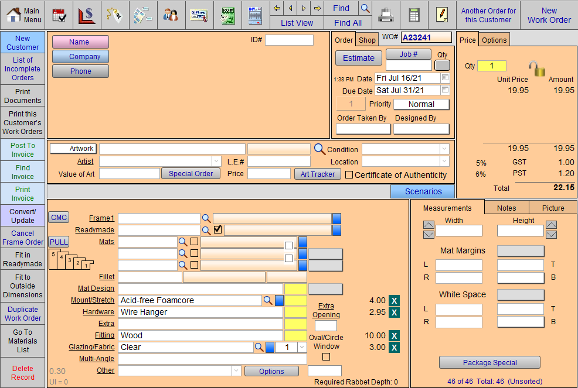
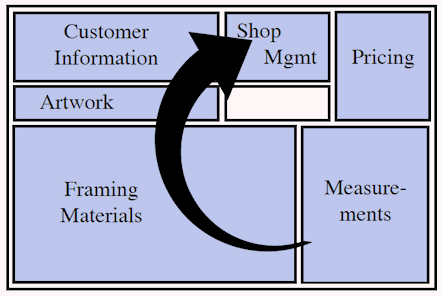
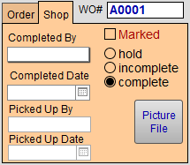
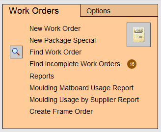
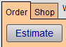

Work Orders Overview
The Work Orders file is where you create, price, and track all Work Orders; print Estimates and Proposals; monitor production flow and convert framed artwork for gallery display.
FrameReady Webinar: Work Order Tips and Tricks
YouTube link: https://youtu.be/HH3yWqtc6PQ
The Work Order Screen
-
The Work Order file is used for calculating the price of a custom picture frame.
-
Its point-of-sale design has easy to use pop-up menus, check boxes, and buttons.
-
Moulding, mat design, hardware, etc. are all selected from pop-up lists; this date orginates from the Price Codes file.
-
When clicked, Text buttons take you to screens with more choices and details.
-
Invoices may be created directly from this file for framing purchases.
-
This file creates, prices and tracks all work orders; prints Estimates and Proposals; monitors production flow and converts framed artwork for gallery display.

Work Order Sections and Work Flow

The Work Order screen (in form view) is divided into six sections
-
Measurements
-
Framing Materials/ components
-
Artwork
-
Customer Information
-
Shop Management
-
Pricing
Tip: When creating a Work Order, we recommended that data be entered in the order shown above.
-
Meet the customers needs first by entering the framing measurements, materials and the artwork information.
-
That information can then be used to calculate the price (which appears in the upper right corner of the screen.)
-
The last item to enter is the customer information, which is required for your records.
Of course, the individual entering the data has the flexibility to move around the screen in any way, e.g. If purchasing art from stock, enter artwork first; If ordering art, enter customer information first, etc.
Do not post a Work Order to an Invoice until you are ready to receive payment.
See also: How to Enter a Deposit (accrual accounting method), How to Enter a Deposit Without Creating a Taxable Invoice (cash accounting method)
Work Order Status

The status of any given Work Order can only be one of the following:
Incomplete (default)
-
By default, all new Work Orders are set to Incomplete. This may be different than your in-store practise where all orders begin as estimates. This cannot be changed.
-
Incomplete means that the Work Order has been entered on the computer but has not yet been assembled.
-
Incomplete Work Orders are automatically included when you generate a Purchase Order or Frame Order.
Tip: If you are creating scratch Work Orders to test out pricing, then when done either delete them or mark them as Estimate. This prevents them from being included in your ordering stream.
-
An Incomplete schedule can be printed.
-
On the Main Menu, a badge showing the record count of incomplete Work Orders is associated with the Find Incomplete Work Orders button, e.g. 16. Click to view all incomplete tickets.

Hold
-
Use only if you know you have the sale but are not ready to order the supplies, e.g. customer wants spouse to see it, or to confirm that the mat matches the furniture.
Complete
-
The order is assembled and no further work is required on the piece.
-
You must manually mark this button.
-
Completed Work Orders are included in Sales Reports.
Estimate

-
Use the Estimate button to omit the materials from the ordering stream (Frame Orders and Purchase Orders) as well as usage reports.
-
Also, use this status when you create Work Order Templates. See: Create Work Order Templates
Tip: At the end of each month, find all Work Orders marked as Estimate and then contact the customer and encourage them to commit to the sale.
© 2023 Adatasol, Inc.